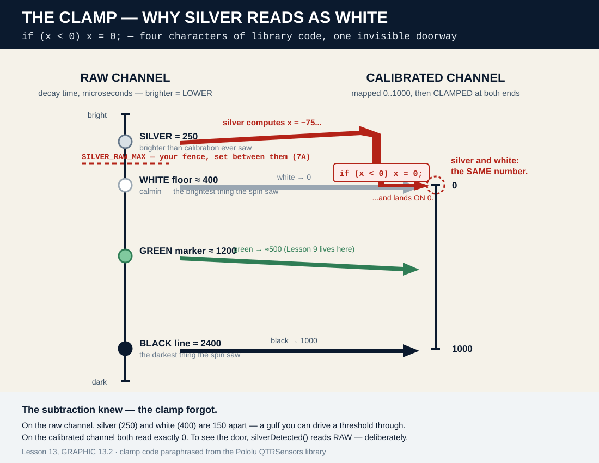
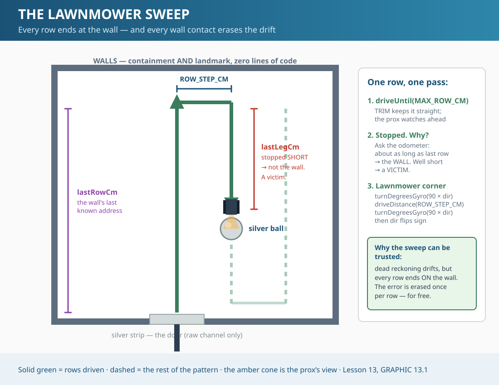

Flying on Instruments — Navigating Where the Line Cannot Go
Zumo 32U4 Robotics • PlatformIO Edition
Version 02.16 — August 2026
PART 1 — Theory & Concepts
Sections 1–3: Learn the fundamentals
Section 1The Line Has Been Carrying You
Count what the line has done for you since Lesson 8. It told the robot where it was — the P-controller's whole error signal is "how far off the line am I?" It told the robot where to go — forward means "along the line." It even defined what the sensors mean — calibration mapped the world onto a scale that runs from the line's white floor to the line's black tape. Position, direction, and meaning. The line was doing all three jobs, and you never had to notice.
In this lesson the robot drives through a doorway, and on the other side there is no line. Not a gap — Lesson 11 handled gaps, a few blind centimeters with the line waiting on the far side. Gone. An open floor with walls around it, somewhere inside it a victim to find, and nothing painted on the ground to follow.
Pilots have a name for this. When the weather closes in and the window shows nothing but grey, they stop flying by what they see and start flying by what their instruments report. They call it flying on instruments, and it is a separate license, because it is a separate skill. Your robot already owns the instruments: encoders that count distance (Lesson 6), an odometer that survives a dying battery (Lesson 11), a gyro that catches slipping wheels in a lie (Lesson 12), and TRIM to hold a straight line with no line to hold (Lessons 3 and 6). Today they stop being safety nets and become the whole aircraft.
💭 THE ONE IDEA
When the reference disappears, you navigate on your instruments — and you sense on the raw channel, because calibration can only describe the world it was shown.
Section 3 · TheorySilver Is Invisible to Calibrated Eyes
The rescue zone's doorway is a strip of silver tape laid across the line. Silver is more reflective than white paper — shinier than anything your robot has ever driven over. You would think the brightest thing on the course would be the easiest thing to see.
It is the only thing on the course your calibrated sensors cannot see. Here is why, and this is not a metaphor — it is four lines from the Pololu library source, the actual code that runs inside readCalibrated():
signed int x = 0;
if(denominator != 0)
x = (((signed long)sensor_values[i]) - calmin) * 1000 / denominator;
if(x < 0)
x = 0; // <-- brighter than the calibrated minimum? You read ZERO.elseif(x > 1000)
x = 1000;
Walk through it. Calibration (that spin your robot does at startup) records the brightest and darkest thing it saw — calmin and the maximum — and then maps every future reading onto a 0-to-1000 scale between them. White floor reads 0. Black line reads 1000. Everything in between lands in between. It is a beautiful system, and it is why Lesson 8's line following works in morning light and afternoon light alike.
But look at the clamp: if (x < 0) x = 0;. A surface brighter than the calibration spin ever saw would compute a negative number — and the clamp rounds it up to exactly 0. The same 0 as plain white floor. Silver, the brightest thing on the course, reads as identical to the most ordinary thing on the course. The information is destroyed before your code ever sees the number.
🔑 CALIBRATION IS A CONTRACT
Calibration maps the world you showed it — white floor to black line — onto 0..1000, and clamps everything outside that world to the edges. It buys you comparability and it costs you range. Silver lives outside the contract.

GRAPHIC 13.2 — The clamp. Raw readings (left) keep silver, white, green and black distinct. The calibrated map (right) folds silver and white onto the same 0.
So how do you see silver? You go under the calibration, to the channel it is built on: lineSensors.read() — the raw read. Raw values are decay times in microseconds: the sensor shines infrared at the floor and times how fast its detector discharges. A bright surface bounces back more light, the detector discharges faster, and the number is smaller. On the raw channel, brighter = lower — and silver reads lower than white ever does. The gap between them is real, measurable, and yours to find in Section 7A.
One more thing before you object that this breaks a book-wide rule. Since Lesson 8 this book has hammered one nail: use readCalibrated(), never raw read(). That rule stands — for line work. The rule was never "calibrated is holy." The rule is match the channel to the question:
"Where is the line?" is a question inside the calibrated world. Calibrated. Always.
"Is this brighter than anything I calibrated on?" is a question about the edge of that world — and the calibrated channel clamps the answer to a lie. Raw. Deliberately.
Lesson 11 cut a feature the hardware could not support and taught you why. This lesson uses a channel the rules seemed to forbid and teaches you why. Same discipline, opposite direction: the reason behind a rule tells you where the rule ends.
The rescue zone is a walled space: a floor you can drive on, walls tall enough that the robot cannot leave, a silver tape strip across the line at the doorway, and victim balls somewhere inside — one silver, one black. That is the whole build.
[IMAGE 13.1] The rescue space: walled zone, silver entrance strip across the line, silver and black victim balls on the floor. (Photo queue.)
4.1 The Walls Are Not Decoration
Lesson 11 proved that a cliff cannot be detected by this hardware, and closed with a rule this book now lives by: when hardware cannot support a behaviour, do not ship a guard that mostly works — use a physical barrier or the floor. This course is that rule made of wood. The robot stays in the zone because the walls are there, with zero lines of containment code. Not one boundary check. The barrier does the job perfectly, silently, every time — which is precisely why it is the right tool.
And the walls do a second job, one that makes the whole lesson possible. Dead reckoning drifts — you proved it in Lesson 6 when your square would not close. Every centimeter of error the encoders, TRIM, and gyro let through accumulates... unless something erases it. Watch what happens in Section 5: every sweep row ends at the wall. Wherever the robot thought it was, the wall is where it actually is. The error resets to zero at the end of every single row. The wall is not just containment. The wall is a landmark, and landmarks are how instrument flyers stay honest.
4.2 What Each Sensor Can Still Do In Here
No line changes every sensor's job description:
Line sensors, calibrated channel — unemployed. There is no line, and the door clamps to a lie (Section 3).
Line sensors, raw channel — the doorman. silverDetected() watches for all five sensors to read brighter-than-white at once. Only the strip does that.
Front proximity sensor — the lookout. Against tall walls it answers exactly one question — "something ahead?" — and it cannot tell you whether that something is the wall or a victim. Section 5 solves that with a witness you already own.
Encoders + TRIM + gyro — the whole aircraft. Straight rows (TRIM, Lesson 6), measured rows (odometer, Lesson 11), square corners on a floor that lies to wheels (gyro, Lesson 12).
Notice what this lesson costs in pins and hardware: nothing. Not one wire moves, not one jumper changes. Lesson 13 is the first lesson in this book that adds zero hardware — every sensor was already aboard. What changes is what you ask of them.
4.3 The Black Ball — Read This Before You Blame Your Code
The rescue kit ships two victims: a silver ball and a black one. Here is the truth up front, because you will discover it in Section 7A anyway and you deserve to know it is not your fault:
⚠️ WARNING
THE BLACK BALL IS NEARLY INVISIBLE TO THIS ROBOT
The front proximity sensor works by bouncing infrared light off things and counting how much comes back. A black ball absorbs infrared — the same physics that makes black tape read dark to the line sensors makes a black ball return almost nothing to the prox. In Section 7A you will hold each ball in front of the sensor and watch the counts: the silver ball announces itself across the zone; the black ball barely whispers at point-blank range. This robot will find silver victims and drive straight past black ones — not because your thresholds are wrong, but because the signal is not there to threshold.
Lesson 11 taught the discipline for exactly this moment: a physically impossible feature gets cut from the code and taught as a limitation — because a detector that "mostly" finds black balls is worse than none; a rescuer would trust it. So the code in this lesson hunts the silver victim, honestly and well. The black ball stays on the course as a standing question. Section 8A.3 does the engineering follow-up: what sensor would see it, and what it would cost. (Spoiler: this is why real rescue robots carry cameras.)
Section 5 · Code WalkthroughFour Blanks, Four Measurements
Four new pieces, each in the file where it belongs. By Lesson 13 you can predict the layout before reading it — that is Lesson 7's whole promise paying rent:
Piece
Lives in
Job
Four tunables + StopReason + three states
RobotConfig.h
Every number you will tune, in the numbers file
silverDetected()
RobotSensors.cpp
The doorman — raw channel, all five sensors
driveUntil()
RobotMotion.cpp
A straight line with its eyes open
Three new states in the switch
main.cpp
The sweep itself — decisions, not plumbing
5.1 A Primitive That Reports Why It Stopped
driveDistance() has served since Lesson 6, and it has one blind spot: once a leg starts, nothing can interrupt it. It holds the wheel and stares at the odometer until the centimeters run out. In the zone that is disqualifying — a sweep row must end early the instant the prox sees something, and the kill switch must work mid-leg, not between legs.
driveUntil() is driveDistance()'s watchful twin. Same TRIM, same both-encoder average, same open-loop discipline — plus one poll inside the loop, and a report at the end. And the report is the interesting part. A leg can end three ways, and the caller needs to know which:
// ===== WHY DID THE LEG END? (NEW for Lesson 13) =====// driveUntil() drives a straight line that can end three ways.// A primitive that reports WHY it stopped is worth two that don't.enum StopReason {
STOP_DISTANCE, // Drove the full budget - saw nothing
STOP_PROX, // Something ahead - wall or victim, the CALLER decides
STOP_KILL // B pressed - stop everything
};
Read STOP_PROX's comment twice: "wall or victim, the CALLER decides." The primitive reports facts; the state machine interprets them. That split — measurement below, judgment above — is the same one that keeps RobotSensors.cpp from ever setting a motor speed. It is what lets Section 6 test each layer alone.
5.2 The Lawnmower Sweep

GRAPHIC 13.1 — The sweep. Every row runs wall-to-wall; every wall contact zeroes the accumulated drift. The prox looks ahead of the robot, so rows can be coarser than the robot is wide.
Mow a lawn and you already know the algorithm: run to the far edge, turn, step over one mower-width, turn again, run back. The sweep is exactly that, built from parts you already own — driveUntil() for the rows, turnDegreesGyro() for the corners, driveDistance() for the sidestep. Look at the geometry of what the walls contribute: a row does not end after a guessed distance; it ends when the wall says so. Every pass, whatever error TRIM let through and whatever the gyro's corners smeared, the wall wipes the slate. Dead reckoning that gets corrected forty times a run is dead reckoning you can trust.
And here is the payoff of a sweep whose rows have consistent length: the row itself becomes a measuring stick. The walls do not move. This row should run about as long as the last one did. So when the prox fires and the odometer says the leg is twenty centimeters short of where the wall stood last pass — the thing ahead is not the wall. The prox says "something ahead"; the odometer says which something. Lesson 12 taught you the pattern: when one sensor cannot answer alone, find a second sensor that can call its bluff. The gyro cross-examined the encoders. Now the odometer cross-examines the prox. This is the third time the book has played this card, and it will not be the last — sensor fusion is the whole future of this field.
5.3 Four Blanks, Four Measurements
Four new tunables ship as blanks — = 0, with the starting guess in the comment, exactly as always. Fill them from Section 7A's measurements, not from hope:
SILVER_RAW_MAX — the fence between silver's raw reading and white's. Measure both, set it between.
WALL_STOP_COUNT — the prox count that means "wall, close enough, turn now." You already own CLOSE_THRESHOLD — so why a new number? Because a wall is not an obstacle. You stop for obstacles to avoid them; you stop at walls to turn. Different job, different distance, different number.
ROW_STEP_CM — the sidestep between rows. The prox looks ahead, so rows can be coarser than the robot is wide — but every centimeter you add is floor the sweep never inspects.
VICTIM_SHORT_CM — how much shorter than last row means "victim, not wall." Too small and gyro drift throws false victims; too big and a victim near the wall goes unnoticed.
Until you fill them, the robot honestly refuses to work: with WALL_STOP_COUNT = 0 every leg ends instantly, and with SILVER_RAW_MAX = 0 the door is invisible (nothing reads brighter than zero). A blank that secretly half-works teaches you nothing. A blank that parks the robot sends you to Section 7A, which is where the answers live.
Start from your finished Lesson 12 project — or pull a fresh copy from the Project Maker (Lesson 12 → Finished). Every step below compiles green on its own, and every step's byte count is printed so you can check your build against the book's. When a step adds code that nothing calls yet, the byte count does not move — the linker discards what is never used. That is not your edit vanishing; Step 5 proves it by calling the code and watching the bytes arrive.
Step 1 — The Numbers, the Names, the Reasons
🎯 THE GOAL
Everything tunable and everything nameable lands in RobotConfig.h first: four blanks, a StopReason enum, and three new robot states. No behavior changes — this step is pure vocabulary.
Open RobotConfig.h and add the whole rescue block at the bottom of the file:
// ===== RESCUE ZONE (NEW for Lesson 13) =====// The zone has no line. Navigation runs on the instruments you built// in Lessons 6, 11 and 12 - encoders, TRIM, gyro. Sensing runs on the// RAW channel, because calibration cannot see brighter-than-white.// Silver reads BRIGHTER than anything you calibrated on. On the raw// channel, brighter = LOWER. Measure silver and white in Section 7A,// then set this BETWEEN them.constint SILVER_RAW_MAX = 0; // <-- YOUR NUMBER. 7A measures it.// (0 means the door is invisible -// nothing can read brighter than 0.)// You already have CLOSE_THRESHOLD. Why a new number? Because a wall// is not an obstacle. You stop for obstacles to AVOID them. You stop// at walls to TURN. Different job, different distance, different number.constint WALL_STOP_COUNT = 0; // <-- YOUR NUMBER. 7A measures it.// (0 ends every leg instantly - the// sweep will not move until you fill this in.)// Sideways step between sweep rows. The prox sees AHEAD of the robot,// so rows can be coarser than the robot is wide - but every centimeter// you add is floor the sweep never looks at.constfloat ROW_STEP_CM = 0.0; // <-- YOUR NUMBER. Try 15 and work from there.// A row that ends THIS much shorter than the last row did not reach// the wall. Something is standing in front of it.constfloat VICTIM_SHORT_CM = 0.0; // <-- YOUR NUMBER. Try 15 and work from there.// Longest possible row. NOT a blank - a safety cap. If the prox somehow// misses the wall, this ends the row before the robot grinds against it.constfloat MAX_ROW_CM = 300.0;
// ===== WHY DID THE LEG END? (NEW for Lesson 13) =====// driveUntil() drives a straight line that can end three ways.// A primitive that reports WHY it stopped is worth two that don't.enum StopReason {
STOP_DISTANCE, // Drove the full budget - saw nothing
STOP_PROX, // Something ahead - wall or victim, the CALLER decides
STOP_KILL // B pressed - stop everything
};
Then find the RobotState enum and grow it by three. (The comments on the Lesson 11 lines change from NEW to From — they have seniority now.)
// ===== ROBOT STATES (UPDATED for Lesson 11) =====// One name for "what is the robot doing right now"enum RobotState {
STOPPED, // Motors off, waiting for B
FOLLOWING_LINE, // P-control driving - Lesson 8's whole job
AT_INTERSECTION, // Stopped on a marker, announcing the decision
EXECUTING_TURN, // Turning on Lesson 6's encoder machinery
OBSTACLE_DETECTED, // From Lesson 10: something is in the way - stop and plan
AVOIDING_OBSTACLE, // From Lesson 10: driving the avoidance maneuver
RETURNING_TO_LINE, // From Lesson 10: maneuver done, hunting for the line again
GAP_CROSSING, // From Lesson 11: driving blind across a gap, counting the distance
LINE_LOST, // From Lesson 11: drove the whole budget and never found the line
ENTERING_ZONE, // NEW for Lesson 13: silver strip seen - through the door
SWEEPING_ZONE, // NEW for Lesson 13: lawnmower rows, no line, instruments only
VICTIM_FOUND // NEW for Lesson 13: stopped short of the wall - someone is here
};
🔩 COMPILE CHECK
24,534 bytes — byte-identical to your Lesson 12 finished build. Constants nothing reads and enum names nothing uses are free. Write that down; Step 5 cashes it in.
silverDetected() — the raw-channel check from Section 3, living in RobotSensors.cpp where every sensor question belongs. Defined, declared, and deliberately not yet called.
Declare it at the bottom of RobotSensors.h:
// ===== RESCUE ZONE SENSING (NEW for Lesson 13) =====bool silverDetected();
And define it at the bottom of RobotSensors.cpp. Read the comment block like it owes you money — it is Section 3 compressed to eight lines:
// ===== RESCUE ZONE SENSING (NEW for Lesson 13) =====// Silver is INVISIBLE to readCalibrated(). Calibration maps the world// you spun over - white floor to black line - onto 0..1000, and CLAMPS.// Anything brighter than the calibrated minimum reads exactly 0: the// same 0 as plain white. To see outside the calibrated world you must// go UNDER the calibration, to the raw channel - where brighter = LOWER.bool silverDetected() {
unsignedint raw[5];
lineSensors.read(raw); // RAW - deliberately NOT readCalibrated()for (int i = 0; i < 5; i++) {
if (raw[i] >= SILVER_RAW_MAX) {
returnfalse; // this sensor is not silver-bright
}
}
returntrue; // ALL FIVE brighter than silver - that is the strip
}
Why all five sensors? Because that is the strip's signature and nothing else's. A glare spot might blind one sensor; a worn patch of floor might brighten two. Only a strip of silver spanning the whole array pulls all five below the fence at the same instant. The AND of five noisy witnesses is a quiet, confident yes.
🔩 COMPILE CHECK
24,534 bytes. Still identical — the function exists and nobody calls it, so the linker leaves it out of the build entirely. (We verified with avr-nm: the symbol is genuinely absent, not hiding.)
The door goes live: FOLLOWING_LINE checks for silver every loop, a stub ENTERING_ZONE state announces the find and stops, and the status screen learns the three new names. The banner finally says 13 while we are in the neighborhood.
First, housekeeping in setup() — two banner lines still introduced this project as Lesson 10 (they have been wrong since Lesson 11; today they get fixed):
Teach showStatus() the three new names — add these after the LINE_LOST case:
case ENTERING_ZONE: display.print(F("ZONE!")); break; // NEW for Lesson 13case SWEEPING_ZONE: display.print(F("SWEEPING")); break; // NEW for Lesson 13case VICTIM_FOUND: display.print(F("VICTIM!")); break; // NEW for Lesson 13
Now the check itself. Here is the full FOLLOWING_LINE case as it stands after the edit — the silver check slots in as the new PRIORITY 2, and everything below it renumbers. Placement is load-bearing, and the comment explains the trap: on the calibrated channel silver clamps to 0 on all five sensors, which makes isLineVisible() report... no line. To your Lesson 11 code, the rescue zone's doorway is indistinguishable from a gap — and handleGap() would drive straight through the most important marker on the course, hunting for a line that is never coming back. The raw check must get there first:
case FOLLOWING_LINE: {
if (killSwitchPressed()) break; // B = STOP - now one helper, used everywhere// PRIORITY 1 - a crash is worse than a missed turn. Check it FIRST.if (checkForObstacle()) {
motors.setSpeeds(0, 0); // Stop FIRST - then think
currentState = OBSTACLE_DETECTED;
break;
}
// PRIORITY 2 - the rescue zone door. Check it BEFORE isLineVisible():// silver clamps to 0 on the calibrated channel, so to the old code// the door reads as a GAP - a hole in the world - and handleGap()// would drive straight through it, hunting for a line that is not// coming back.if (silverDetected()) {
motors.setSpeeds(0, 0); // Stop FIRST - then think
currentState = ENTERING_ZONE;
break;
}
if (isLineVisible()) {
followLine();
// PRIORITY 3 - the course is asking for a turn
IntersectionType seen = checkForIntersection();
if (seen != NO_INTERSECTION) {
motors.setSpeeds(0, 0); // Stop FIRST - then think
pendingTurn = seen;
currentState = AT_INTERSECTION;
}
} else {
// PRIORITY 4 - nothing special: just drive
handleGap();
}
break;
}
And the stub state — for now, detecting the door is the whole trick:
case ENTERING_ZONE: {
display.setLayout21x8();
display.clear();
display.gotoXY(0, 2);
display.print(F("RESCUE ZONE"));
buzzer.playNote(NOTE_C(6), 200, 15);
delay(600); // Long enough for a human to see the call// For now the DOOR is the whole trick: detect it, announce it,// stop. The room behind it comes in Step 5.
currentState = STOPPED;
showStatus();
break;
}
🔩 COMPILE CHECK
24,714 bytes — up 180. The door is live: the silver check, the state transition, the announcement. One hundred eighty bytes is what "see the invisible" costs.
driveUntil() in RobotMotion.cpp — driveDistance()’s body with its eyes open. Defined, declared, not yet called. You know what the byte count will say.
RobotMotion.h needs one include it never needed before — driveUntil() returns a StopReason, and that type lives in the config:
#pragma once
#include "RobotConfig.h" // NEW for Lesson 13: driveUntil() returns a StopReason
Declare it at the bottom of the header:
/*
driveUntil() NEW for Lesson 13
--------------
driveDistance()'s watchful twin. Same TRIM, same encoder average -
but it POLLS while it drives, and it can stop early.
Returns WHY it stopped (a StopReason). Writes HOW FAR it actually
went to lastLegCm, in centimeters.
*/
StopReason driveUntil(float maxCm);
externfloat lastLegCm; // How far the last leg actually went
And the function itself, at the bottom of RobotMotion.cpp. Put it next to driveDistance() in your head as you type — same encoder reset, same TRIM, same both-wheel average. The differences are exactly three: the poll, the early exits, and the report:
// ===== DRIVE UNTIL (NEW for Lesson 13) =====// driveDistance() is BLIND: once it starts, nothing can interrupt a// leg. The sweep needs a leg with its eyes open. Same body - same// TRIM, same averageCounts() gate - plus one poll inside the loop and// a report at the end. A blind primitive, made watchful.float lastLegCm = 0; // How far the last leg actually went
StopReason driveUntil(float maxCm) {
encoders.getCountsAndResetLeft();
encoders.getCountsAndResetRight();
long targetCounts = maxCm * COUNTS_PER_CM;
// TRIM keeps it STRAIGHT (Lesson 6). There is no line to correct// against in the zone - this is an OPEN loop, and open loops need// TRIM or they curve away into the corner.
motors.setSpeeds(DRIVE_SPEED + TRIM, DRIVE_SPEED);
StopReason reason = STOP_DISTANCE;
while (averageCounts() < targetCounts) {
if (buttonB.getSingleDebouncedPress()) { // the kill switch outranks everything
reason = STOP_KILL;
break;
}
if (readFrontProx() >= WALL_STOP_COUNT) { // something ahead - wall OR victim
reason = STOP_PROX; // the CALLER decides whichbreak;
}
delay(10);
}
motors.setSpeeds(0, 0);
lastLegCm = averageCounts() / COUNTS_PER_CM; // report how far we gotreturn reason;
}
Two lines deserve a second look. The kill-switch poll is first in the loop — inside a leg, mid-zone, B must work now, not after the wall. And the last line writes lastLegCm whatever happened: even a leg that ends early reports honestly how far it got. Step 6 turns that honest report into the victim detector.
🔩 COMPILE CHECK
24,714 bytes. Flat again, same reason as Step 2 — and this is the last free step. Everything after this costs bytes, because everything after this runs.
The lawnmower goes live: sweep bookkeeping variables, a real ENTERING_ZONE hand-off, and a SWEEPING_ZONE state that mows wall-to-wall forever. No victim logic yet — first prove the pattern, then teach it to notice.
Three bookkeeping variables join the other robot state at the top of main.cpp:
// ===== SWEEP STATE (NEW for Lesson 13) =====float lastRowCm = 0; // How long the LAST row was - the wall's last known addressint sweepDir = 1; // Which way the end-of-row turn goes (+1 right, -1 left)int rowCount = 0; // Rows completed so far. Row zero is the leap of faith.
ENTERING_ZONE stops being a stub — replace its ending so it resets the books and hands off to the sweep. Read the comment about row zero; Section 8A.2 has the full story:
case ENTERING_ZONE: {
display.setLayout21x8();
display.clear();
display.gotoXY(0, 2);
display.print(F("RESCUE ZONE"));
buzzer.playNote(NOTE_C(6), 200, 15);
delay(600); // Long enough for a human to see the call// Through the door. Row zero is a leap of faith: the robot has// never seen this wall before, so the first prox stop is ALWAYS// treated as the wall. Row zero teaches it the room; every later// row is checked against the last.
lastRowCm = 0;
sweepDir = 1;
rowCount = 0;
currentState = SWEEPING_ZONE;
showStatus();
break;
}
And the sweep itself. One whole row per pass through the case — leg, record, corner, sidestep, corner, flip:
case SWEEPING_ZONE: {
// One whole row per pass through this case.
StopReason reason = driveUntil(MAX_ROW_CM);
if (reason == STOP_KILL) {
currentState = STOPPED;
showStatus();
break;
}
// The wall (or the full budget - if the prox missed, MAX_ROW_CM// catches it). Record where the wall was, then take the lawnmower// turn: 90, one step sideways, 90 - and the NEXT row's turns go// the other way.
lastRowCm = lastLegCm;
rowCount++;
turnDegreesGyro(90.0 * sweepDir);
driveDistance(ROW_STEP_CM);
turnDegreesGyro(90.0 * sweepDir);
sweepDir = -sweepDir;
break;
}
Trace sweepDir through two rows on paper before you trust it. Row one ends: turn right 90, step, turn right 90 — now facing back the way you came, one lane over. sweepDir flips. Row two ends: turn left 90, step, turn left 90. Right-right, left-left, right-right — that alternation is the entire lawnmower, and it is one multiplication: 90.0 * sweepDir.
🔩 COMPILE CHECK
24,946 bytes — up 232. There it is: driveUntil() finally has a caller, so the linker finally pays for it — Steps 4’s "free" code just arrived in the build, alongside the sweep case itself. The flat steps were never missing code. They were code waiting for a reason.
The odometer cross-examines the prox: a stop well short of the wall’s last known address is a victim, and a new VICTIM_FOUND state celebrates it. This is the finished build.
One more bookkeeping line, under the sweep variables:
int rescueCount = 0; // Victims found
Inside SWEEPING_ZONE, between the kill check and the wall bookkeeping, insert the question this whole lesson has been building toward — here is the case’s midsection after the edit:
// Wall, or victim? Ask the ODOMETER. The walls do not move: this// row should run about as long as the last one did. Stopped well// SHORT of that - something is standing in the way. The prox says// "thing ahead"; the odometer says WHICH thing.if (reason == STOP_PROX && rowCount > 0 &&
lastLegCm < lastRowCm - VICTIM_SHORT_CM) {
currentState = VICTIM_FOUND;
break;
}
// The wall (or the full budget - if the prox missed, MAX_ROW_CM// catches it). Record where the wall was, then take the lawnmower// turn: 90, one step sideways, 90 - and the NEXT row's turns go// the other way.
lastRowCm = lastLegCm;
rowCount++;
Look at the guard conditions, because each one is real engineering. reason == STOP_PROX: a leg that ended on distance budget says nothing about victims. rowCount > 0: row zero has no previous row to compare against — the leap of faith (Section 8A.2). And the comparison itself, lastLegCm < lastRowCm - VICTIM_SHORT_CM: not merely shorter, but shorter by more than the margin, because gyro corners smear a few centimeters of honest noise into every row and you must not call that noise a victim.
Finally, the celebration state:
case VICTIM_FOUND: {
rescueCount++;
display.setLayout21x8();
display.clear();
display.gotoXY(0, 0);
display.print(F("VICTIM FOUND!"));
display.gotoXY(0, 2);
display.print(F("Rescues: "));
display.print(rescueCount);
display.gotoXY(0, 4);
display.print(F("At: "));
display.print(lastLegCm);
display.print(F(" cm"));
ledGreen(1);
buzzer.playNote(NOTE_C(5), 150, 15);
delay(200);
buzzer.playNote(NOTE_E(5), 150, 15);
delay(200);
buzzer.playNote(NOTE_G(5), 300, 15);
// FINDING it IS the rescue. The Zumo has no gripper - the day a// robot must CARRY the victim out is the day it needs an arm.// (Section 8 has more to say about that.)
currentState = STOPPED;
break;
}
The closing comment is the design decision of the lesson: finding it is the rescue. This robot has no gripper, no arm, no way to carry anyone anywhere — and a rescue that reports a verified location is a real rescue; it is what search dogs and avalanche beacons do. The day a robot must carry the victim out is the day it needs an arm; Section 8A.3 prices that out.
🔩 COMPILE CHECK
24,902 bytes — down 44, and this is the finished build. Read that again: the finished robot is smaller than Step 5. We disassembled both to find out why: the rewritten hand-off and the recompiled state switch came out 120 bytes tighter than the stubs they replaced, while the victim bookkeeping cost only 26. Code you delete pays you back — a preview of Lesson 16, where that becomes the whole game. Total cost of Lesson 13: 368 bytes over Lesson 12. A doorway, a sweep, and a witness — for less than four hundred bytes.
Five rungs, one primitive at a time, same discipline as Lessons 7 and 11: you cannot tune a number you have not measured, and you cannot trust a sweep whose atom you have not tested. Every rung is in the Project Maker under Lesson 13 if you would rather download than edit.
The motors never run in this rung. You are the drivetrain: roll the robot by hand over every surface the course owns, hold each ball in front of its nose, and write down what the numbers say. This rung replaces main.cpp entirely (Maker: Lesson 13 → 7A Surface Meter):
#include "RobotConfig.h"
#include "RobotSensors.h"
#include "RobotHelpers.h"
#include "RobotMotion.h"
// ============ 7A: THE SURFACE METER ============// The motors NEVER run in this test. You are the drivetrain: roll the// robot by hand over every surface the course has - floor, white tape,// SILVER tape, black tape, and hold it facing the wall, then a ball.// WRITE DOWN what each one reads. You cannot tune a number you have// not measured.//// Notice what is MISSING from setup(): the calibration spin. The raw// channel does not need one. That is the whole point of Section 3.void setup() {
Serial.begin(115200);
delay(500);
Serial.println(F("=== Lesson 13 - 7A Surface Meter ==="));
display.clear();
display.setLayout21x8();
display.print(F("== 7A SURFACE METER =="));
delay(1000);
initLineSensors();
initProxSensors();
// ===== SAFETY GATE - habit, even with the motors parked =====
waitForStart();
}
void loop() {
unsignedint raw[5];
lineSensors.read(raw); // RAW - the channel Section 3 explains
display.gotoXY(0, 0);
display.print(F("RAW (brighter=LOWER)"));
display.gotoXY(0, 2);
for (int i = 0; i < 5; i++) {
display.print(raw[i]);
display.print(F(" "));
}
display.print(F(" "));
display.gotoXY(0, 4);
display.print(F("Prox: "));
display.print(readFrontProx());
display.print(F(" (0-6)"));
display.gotoXY(0, 6);
display.print(F("Roll me by hand"));
delay(100);
}
Notice what is missing from setup(): the calibration spin. The raw channel needs no calibration — that is the entire point of Section 3, sitting right there in the code’s silence.
Fill in every cell. The blanks in RobotConfig.h come from this table and nowhere else:
Surface / target
Raw line reading
Prox count
Zone floor
______
—
White tape
______
—
Silver tape
______
—
Black tape
______
—
Wall at 30 / 20 / 10 cm
—
___ / ___ / ___
Silver ball at 30 / 20 / 10 cm
—
___ / ___ / ___
Black ball at 30 / 20 / 10 cm
—
___ / ___ / ___
Three discoveries are waiting in that table. Silver tape reads clearly below white — there is your SILVER_RAW_MAX, set between them. The wall’s counts give you WALL_STOP_COUNT at the stopping distance you want. And the black ball’s row… read it, read it again, and then reread Section 4.3. The signal is not there. You just measured the limitation this lesson teaches.
Your Step 3 build is this rung (Maker: Lesson 13 → 7B Silver Brake) — the door detector wired to a stub that announces and stops. One blank is live: SILVER_RAW_MAX, fresh from the 7A table. Run the robot down the line and over the strip. Then, as always, test both failure directions:
Set SILVER_RAW_MAXbelow silver’s reading — the robot sails over the strip like it is not there. The door is invisible. (Remember this failure. Bonus B4 plants it a sneakier way.)
Set it above white’s reading — the robot screams RESCUE ZONE at plain floor. Every surface is a door.
Set it between, where 7A told you — one clean stop, exactly on the strip, every run.
A threshold you have broken in both directions is a threshold you understand.
The atom of the sweep: a single watchful leg, then a single gyro corner. If the atom is right, the sweep is a for-loop away; if the atom is wrong, no amount of sweeping will hide it. This rung also replaces main.cpp (Maker: Lesson 13 → 7C Leg and Turn):
#include "RobotConfig.h"
#include "RobotSensors.h"
#include "RobotHelpers.h"
#include "RobotMotion.h"
// ============ 7C: ONE LEG, ONE TURN ============// The ATOM of the sweep: a single watchful leg, then a single gyro// turn. If the atom is right, the sweep is a for-loop away. If the// atom is wrong, no amount of sweeping will hide it.void setup() {
Serial.begin(115200);
delay(500);
Serial.println(F("=== Lesson 13 - 7C Leg and Turn ==="));
display.clear();
display.setLayout21x8();
display.print(F("== 7C LEG AND TURN =="));
initLineSensors();
initProxSensors();
// Gyro zero BEFORE anything moves - a spin cannot calibrate a gyro.
display.gotoXY(0, 2);
display.print(F("Gyro cal - HOLD STILL"));
gyroSetup();
// ===== SAFETY GATE - before ANY motion =====
waitForStart();
display.clear();
display.gotoXY(0, 0);
display.print(F("B: run one atom"));
}
void loop() {
if (buttonB.getSingleDebouncedPress()) {
display.clear();
display.gotoXY(0, 0);
display.print(F("Leg..."));
StopReason reason = driveUntil(MAX_ROW_CM);
display.gotoXY(0, 2);
if (reason == STOP_PROX) display.print(F("Stop: PROX"));
elseif (reason == STOP_DISTANCE) display.print(F("Stop: BUDGET"));
else display.print(F("Stop: KILL"));
display.gotoXY(0, 4);
display.print(F("Leg: "));
display.print(lastLegCm);
display.print(F(" cm"));
delay(800);
turnDegreesGyro(90.0); // the gyro decides when the turn is done
display.gotoXY(0, 6);
display.print(F("Turned. B: again"));
}
}
Blanks live: WALL_STOP_COUNT, and your old friend TRIM. Point the robot at a wall, press B, and read the report. Stop: PROX at your chosen distance and a straight track on the floor: atom good. Stopping too late or too early: WALL_STOP_COUNT. Arcing sideways on the way there: TRIM — the zone floor is not the line course, and open loops feel every surface change (Lesson 6 taught you the fix; Lesson 12 taught you the smooth floor lies hardest). Corner not square: hold the robot still during gyro calibration and reread Lesson 12’s Section 7.
The finished build (Maker: Lesson 13 → Finished), all four blanks filled, silver ball on the floor. Line → strip → announcement → rows → and somewhere mid-row, the stop that is not a wall: VICTIM FOUND, with the distance on the screen.
Watch a full run with your eyes on the walls: every row ends flush against one, no matter what the corners smeared. That is the drift being erased in real time — the landmark doing its quiet work. Then watch a false victim happen on purpose: set VICTIM_SHORT_CM to 2 and watch gyro noise get promoted to a rescue. Set it back to what the margin needs to be. Both failure directions, always.
Lesson 12 proved the gyro beats the encoders on one turn. Here is what that is worth across a whole job. This rung is the finished build with exactly one change — the sweep’s corners go back to the encoder turn (Maker: Lesson 13 → 7E Encoder Turns):
lastRowCm = lastLegCm;
rowCount++;
// 7E: the WHEELS decide when the turn is done. Same 90 degrees -// in theory. Run it on the smooth floor and watch the rows fan.
turnDegrees(90.0 * sweepDir);
driveDistance(ROW_STEP_CM);
turnDegrees(90.0 * sweepDir);
sweepDir = -sweepDir;
break;
Run it on the smooth zone floor and watch the rows. Each encoder corner is off by a few degrees the wheels never felt; each row inherits every corner before it; by row five the "parallel" rows are a fan, and the sweep is inspecting the same patch of floor twice while leaving another patch forever unvisited. Now put turnDegreesGyro back and run again: rows like ruled paper.
Same robot, same floor, same 90.0 in the code. The only difference is which instrument decides when the turn is done — the wheels, which the floor lies to, or the gyro, which measures the robot itself. The byte counts of these two builds differ by just 64 bytes — 24,902 against 24,966, the price of keeping both turn functions alive in the binary — and nothing in either number tells you which robot sweeps straight. Every important difference in this book eventually comes down to one line, and the size of the file will never tell you which line.
Robot sails over the silver strip like it is not there
SILVER_RAW_MAX still 0, or set below silver’s reading. Back to the 7A table. (If the strip does not span all five sensors, widen the tape.)
RESCUE ZONE announced on plain floor
SILVER_RAW_MAX above white’s reading — every bright surface is a door.
Enters the zone, then freezes — every leg ends instantly
WALL_STOP_COUNT still 0. Zero is below every possible prox count, so the very first poll “sees the wall.”
Rows arc instead of running straight
TRIM — the zone floor is a new surface, and open loops feel every surface. Retune on this floor (7C).
Corners drift — rows fan apart like 7E, with the gyro turns in place
The gyro’s zero was learned while the robot moved. It must be dead still during startup calibration — and gyroSetup() must run before the line-sensor spin. (Bonus B1 is this bug, planted.)
Victims announced where there are none
VICTIM_SHORT_CM too small — corner noise is being promoted to rescues. Widen the margin.
Drives right past the silver ball
VICTIM_SHORT_CM too large (a victim near the wall reads as the wall), or ROW_STEP_CM so wide the ball sat between rows and off the prox’s sightline.
Drives right past the black ball
Working as measured. That is Section 4.3, not a bug — check your 7A table.
Say calibration recorded calmin = 400 (white floor, raw) and a maximum of 2400 (black tape). Now the robot rolls onto silver and a sensor reads a raw 250 — brighter than white, so a smaller decay time. The library computes x = (250 - 400) * 1000 / 2000 = -75. Negative — genuinely outside the calibrated world, and the sign carries the information “brighter than anything you showed me.” Then the clamp executes: if (x < 0) x = 0. The −75 becomes 0. White floor also computes to 0. The subtraction knew; the clamp forgot. On the raw channel the two numbers were 250 and 400 — a gulf you can drive a threshold through, which is exactly what SILVER_RAW_MAX is.
8A.2 Row Zero — The Leap of Faith
The victim test compares this row to the last row — so what does the first row compare against? Nothing. There is no last row. The code makes an explicit choice (rowCount > 0 in the guard): row zero’s prox stop is always believed to be the wall. The robot spends its first row learning the room, and every later row is checked against that knowledge.
The cost is honest: a victim sitting dead in row zero’s path gets recorded as a very close wall, and the sweep steps politely around it. Rare — it requires the ball on the exact lane the robot enters by — but real. Challenge 3 sells insurance: give row zero one benefit of the doubt, sidestep, and measure again. Two agreeing measurements from different lanes are believable; that is the same instinct as averaging both encoders.
8A.3 What Would See the Black Ball?
The prox fails on the black ball because it measures reflected infrared, and the ball’s job is to absorb exactly that. So what measures something else?
A camera sees ambient light, not its own echo — a black ball on a light floor is a high-contrast target, trivially visible. This is why real rescue robots (and RoboCup teams in the leagues above this one) carry cameras: the black-victim problem is the reason.
A time-of-flight sensor times a laser pulse instead of counting reflected intensity — less fooled by color, though dark targets still shorten its range.
A whisker or bumper feels the ball by touch. Honest, cheap, and it finds the victim by running it over — which rather misses the spirit of a rescue.
And once found — carrying anyone out needs a gripper, a servo to drive it, and a driver channel to spare. Your Zumo’s two DRV8838 drivers are both spoken for, one per tread. The day a robot must carry the victim is the day it needs an arm and the electronics to run one. That is Lesson 16 territory:
[IMAGE 13.2] Preview: servo gripper, modified blade, custom competition robots with arms — what the carry-them-out upgrade looks like. (Photo queue; was slotted under the old lesson numbering.)
8A.4 Landmarks — How the Pros Fly
Pure dead reckoning has a law you have now met three times: error accumulates. Lesson 6’s square would not close; Lesson 12’s triangle came home crooked on encoder corners; 7E’s fan is the same law with more rows. No instrument fixes it — better instruments only slow the leak.
What fixes it is outside the robot: a landmark. Something in the world whose position does not drift, checked against regularly. In this lesson the landmark is the wall, and the check is free — every row ends on it, so every row starts from truth. Full-scale robots do the same thing with more vocabulary: they build maps of landmarks and correct their dead reckoning against them continuously. The technique has a name — SLAM, simultaneous localization and mapping — and when you meet it someday, remember that you have already flown it: instruments to move, landmarks to stay honest.
Three challenges, in rising order of nerve. Each has a worked solution behind the reveal — and every solution is a compiled, verified build in the Project Maker under Lesson 13 → CHALLENGES. Wrestle first, peek second.
Challenge 1: Keep SweepingMediumDeep
📁 Work in: your LastName_L13 build — modify the VICTIM_FOUND state.
🔁 Builds on:
the state machine from Lesson 9 — stepping around a victim is one more transition, and control goes back to the state that owns the sweep.
🎯 THE GOAL
One victim is a demo; a rescue robot keeps working. After the celebration, step around the victim and hand control back to the sweep, so a zone with two silver balls ends with Rescues: 2. First answer the bookkeeping question: after stepping around a victim, should lastRowCm update?
🧠 THE LOGIC (Pseudocode)
replace VICTIM_FOUND's ending — instead of parking in STOPPED:
back off the victim
take the lawnmower turn EARLY (turn, step one row, turn)
flip the sweep direction
hand control back to SWEEPING_ZONE
DO NOT update lastRowCm — the victim is not the wall.
🧩 THE TEMPLATE
Fill the two blanks — the rejoin is the whole trick.
// in VICTIM_FOUND, after the celebration:
driveDistance(-10.0); // back off the victim
turnDegreesGyro(90.0 * sweepDir); // early lawnmower turn
driveDistance(ROW_STEP_CM);
turnDegreesGyro(90.0 * sweepDir);
sweepDir = ____; // flip the sweep direction
currentState = ____; // hand back to the sweepbreak;
// (do NOT touch lastRowCm)
🔓 Click to reveal solution
Replace VICTIM_FOUND’s ending — instead of parking in STOPPED, back off, take the lawnmower turn early, and rejoin:
// CHALLENGE 1: one victim is a demo. A rescue ROBOT keeps// sweeping. Step around the victim - back off, sidestep, rejoin -// and hand control back to the sweep. lastRowCm is NOT updated:// the victim's address is not the wall's address.
driveDistance(-10.0); // back off the victim
turnDegreesGyro(90.0 * sweepDir); // the early lawnmower turn
driveDistance(ROW_STEP_CM);
turnDegreesGyro(90.0 * sweepDir);
sweepDir = -sweepDir;
currentState = SWEEPING_ZONE;
break;
And the bookkeeping answer: no.lastRowCm is the wall’s address, and the victim is not the wall. Update it and the next row’s victim test compares against a corrupted ruler — the very ruler that caught this victim.
📁 Work in: your LastName_L13 build — add an accumulator, then a report in the kill branch.
🔁 Builds on:
Count and Report from Lesson 10 — the same bookkeeping habit, now with three numbers instead of one.
🎯 THE GOAL
When the kill switch ends a run, make the robot account for itself: rows completed, total centimeters swept, victims found. Everything you need is already being measured — this challenge is pure bookkeeping, and bookkeeping is most of real engineering.
🧠 THE LOGIC (Pseudocode)
add an accumulator: totalSweptCm, starts at 0
every leg the sweep drives: totalSweptCm += lastLegCm
when the run ends by the kill switch:
show a SWEEP REPORT — rows, total cm, rescues
🧩 THE TEMPLATE
Fill the three blanks — one accumulator, fed each leg, spent in the report.
float totalSweptCm = ____; // start the logbook empty// each leg the sweep drives:
totalSweptCm += ____; // add this leg's distance// in the kill branch, the report:
display.print(F("Rows: ")); display.print(rowCount);
display.print(F("Dist: ")); display.print(____); // the total swept
display.print(F("Rescues: ")); display.print(rescueCount);
🔓 Click to reveal solution
One accumulator with the sweep variables:
float totalSweptCm = 0; // CHALLENGE 2: every centimeter the sweep drove
Then feed it every leg and spend it in the kill branch:
totalSweptCm += lastLegCm; // CHALLENGE 2: the logbookif (reason == STOP_KILL) {
// CHALLENGE 2: the sweep report - what did the run cost?
display.setLayout21x8();
display.clear();
display.gotoXY(0, 0);
display.print(F("SWEEP REPORT"));
display.gotoXY(0, 2);
display.print(F("Rows: "));
display.print(rowCount);
display.gotoXY(0, 4);
display.print(F("Dist: "));
display.print(totalSweptCm);
display.print(F(" cm"));
display.gotoXY(0, 6);
display.print(F("Rescues: "));
display.print(rescueCount);
delay(4000);
currentState = STOPPED;
showStatus();
break;
}
📁 Work in: your LastName_L13 build — add a one-shot retry ahead of the victim test.
🎯 THE GOAL
Section 8A.2 named the leap of faith: a victim in row zero's path is mistaken for the wall. Sell the insurance — if the first row stops on the prox, give it exactly one benefit of the doubt: back off, sidestep one lane, and run row zero again. Same reading twice, from two lanes? Believe the wall. The trap: why must the retry happen once and only once?
🧠 THE LOGIC (Pseudocode)
add a one-shot flag: rowZeroRetried = false
ahead of the victim test, if:
the stop was the prox, AND it is row zero, AND we have NOT retried yet:
spend the retry (set the flag true)
back off, sidestep one lane (SAME heading — still row zero)
run row zero again
the flag makes this happen ONCE — without it, a truly close wall retries forever.
🧩 THE TEMPLATE
Fill the three blanks — the flag is what makes it one-shot.
bool rowZeroRetried = ____; // row zero gets ONE benefit of the doubt// ahead of the victim test:if (reason == STOP_PROX && rowCount == 0 && !____) { // first row, not yet retried
rowZeroRetried = ____; // spend the one retry
driveDistance(-10.0);
turnDegreesGyro(90.0);
driveDistance(ROW_STEP_CM);
turnDegreesGyro(-90.0); // sidestep, SAME heading - still row zerobreak;
}
🔓 Click to reveal solution
A one-shot flag with the sweep variables:
bool rowZeroRetried = false; // CHALLENGE 3: row zero gets ONE benefit of the doubt
And the retry, inserted ahead of the victim test:
// CHALLENGE 3: row zero cannot classify - there is no last row// to compare against. If the FIRST leg stops on the prox, give it// one benefit of the doubt: back off, sidestep, and run row zero// again from a new lane. If it stops short AGAIN, believe the// wall really is that close.if (reason == STOP_PROX && rowCount == 0 && !rowZeroRetried) {
rowZeroRetried = true;
driveDistance(-10.0);
turnDegreesGyro(90.0);
driveDistance(ROW_STEP_CM);
turnDegreesGyro(-90.0); // sidestep, SAME heading - still row zerobreak;
}
Without the flag, a genuinely close wall triggers the retry forever — sidestep, remeasure, sidestep, remeasure — a robot pacing the zone edge for eternity. One retry converts “possibly wrong once” into “confirmed twice,” and that is all the confidence a measurement can buy.
Inventory, because it is worth taking: your robot follows a line through intersections, around obstacles, and across gaps; recognizes a doorway that is invisible to its calibrated eyes; navigates a room with no markings at all, on instruments you built and tuned yourself; uses the walls of the world to keep its own arithmetic honest; and tells a wall from a victim by letting one sensor cross-examine another. That is not a toy’s skill list. That is the working core of every warehouse robot, vacuum robot, and planetary rover in service.
Next: Lesson 14 is Competition Prep — where everything this book has built stops being lessons and becomes a machine that has to work on demand, in front of people, first try. Self-tests, startup sequences, checklists: the unglamorous discipline that separates robots that demo well from robots that win.
How does the robot know? — that it is in the zone, that it has found a victim, that it is finished. Then: the false-victim threshold you chose, and what happens on either side of it. Why judges care: they probe thresholds. A number you can defend in both directions is a design; a number you cannot is a lucky value.
🏁 FINISHED EARLY?
Four messed-up files wait in Sabotage — each Maker link opens the finished build with one defect planted: two calibrations tidied into one, a TRIM measured honestly and never spent, a sweep too fast to see the ball, and a calibrated read that hides the silver strip.
Four saboteurs, four builds, and here is the frightening part: two of the four compile to exactly 24,902 bytes — byte-identical to the correct build — and the other two land within 16 bytes of it. The file size cannot save you. The compiler will not warn you. Only reading the code — and knowing what each line is for — catches these. Each mystery shows you the planted line up front; your job is not to find the typo. It is to explain why this line produces that symptom. Every sabotaged build is in the Maker under Lesson 13 → BONUS if you want to watch the crime happen.
Mystery B1 — The Corkscrew
A classmate “tidied” setup(): “both calibrations, together — it’s cleaner.” The planted change:
calibrateLineSensors();
gyroSetup(); // as planted: "both calibrations, together"
Now every sweep corner overshoots by the same weird amount, and the rows corkscrew across the zone. The line follower is fine. 7C’s single turn is not fine. Why does the order of two setup calls bend every corner in the run?
Reveal the mechanism
gyroSetup() learns the gyro’s zero — what “not rotating” reads like — by averaging 1,024 samples while the robot holds still. calibrateLineSensors()spins the robot. Run the spin first and the gyro learns its zero mid-pirouette: it now believes some real rotation rate is stillness, and subtracts that fiction from every turn forever after. Every corner inherits the same bias; the rows corkscrew. A spin cannot calibrate a gyro — canon since Lesson 12, and the reason the correct setup() zeroes the gyro before anything moves.
The victim tuned TRIM perfectly in 7C — and the rows in the zone still arc. Their RobotConfig.h shows TRIM = 8, honestly measured. The planted line, in driveUntil():
motors.setSpeeds(DRIVE_SPEED, DRIVE_SPEED); // as planted
Reveal the mechanism
Compare against the real line: setSpeeds(DRIVE_SPEED + TRIM, DRIVE_SPEED). The student’s 8 is declared, tuned, believed in — and never reaches the motors. A declared blank the code never spends is a lie in the worksheet: the student adjusts the number, nothing changes, and they learn to distrust the instrument instead of the build.
Here is the part that should worry you: with TRIM = 8 set, this build and the correct one are still byte-identical — 24,902 bytes each. We disassembled both to prove the difference is real: the correct build loads 158 into the left motor and 150 into the right; the sabotage loads 150 and 150. One instruction’s immediate value. The file size is blind to it; only the disassembly — or the arc on your floor — tells the truth.
“I made the sweep twice as fast,” says the saboteur, proudly. And the runs are faster — and the robot misses the silver ball about half the time, on a course where it used to score every run. The planted line:
driveDistance(ROW_STEP_CM * 2); // as planted: "cover ground faster"
Reveal the mechanism
ROW_STEP_CM was sized in 7A so that adjacent rows’ prox coverage overlaps — no floor goes uninspected. Doubling the step opens a blind stripe between every pair of rows, exactly one step wide. The ball is found when it sits in a covered band and missed when it sits in a stripe — which is why the failure is intermittent, the cruelest kind. Speed was bought with coverage, and nobody was told the price. Halve the blind area or halve the runtime is a real engineering trade; making it silently is the sabotage.
The subtlest of the four. A well-meaning classmate “fixed” silverDetected() to follow the book’s oldest rule: always use the calibrated read. The planted line:
lineSensors.readCalibrated(raw); // as planted: "calibrated is always better"
The symptom: the robot follows the line beautifully, reaches the silver strip… and reports a gap. It drives blind across the doorway, GAP_MAX_CM runs out on the open zone floor, and it parks in LINE_LOST, defeated, three centimeters inside a room it never knew it entered. Explain every beat of that story.
Reveal the mechanism
Section 3, executed. On the calibrated channel, silver clamps to 0 on all five sensors — but the check asks for readings belowSILVER_RAW_MAX, and calibrated values sit at 0 while the threshold was tuned for raw values in the hundreds; the comparison logic collapses and the door never triggers. Meanwhile all-zeros makes isLineVisible() report no line — so handleGap() takes over, exactly as it should for a real gap. The robot crosses its distance budget on open floor and gives up. One word — Calibrated — blinded the doorman, and note who else it blinded: the black ball has been invisible on the same physics all along. Bright-outside-the-contract and dark-absorbing-the-signal are the two edges of the same lesson: a sensor only answers the question its channel can carry.
The line sensors’ unprocessed reading: infrared decay time in microseconds. Brighter surface → faster decay → lower number. Needs no calibration; sees outside the calibrated world.
Calibration clamp
The if (x < 0) x = 0 in readCalibrated() that folds anything brighter than the calibrated minimum onto the same 0 as white. Buys comparability, costs range.
Dead reckoning
Knowing where you are by adding up your own movements — encoders, TRIM, gyro — with no external reference. Drifts, always; the only question is how fast.
Landmark
A fixed feature of the world used to erase accumulated dead-reckoning error. In this lesson: the walls, once per row, for free.
Lawnmower sweep
Coverage pattern of parallel wall-to-wall rows joined by turn–step–turn corners with alternating direction. Guarantees the prox inspects every band of floor — if the step is sized to overlap.
StopReason
The enum driveUntil() returns: STOP_DISTANCE, STOP_PROX, or STOP_KILL. A primitive that reports facts and leaves judgment to the caller.
Cross-examination (sensor fusion)
Using one sensor to resolve another’s ambiguity. The gyro checked the encoders (Lesson 12); the odometer now checks the prox. The grown-up name is sensor fusion.
Row zero / leap of faith
The sweep’s first row, which has no previous row to compare against and therefore must believe its prox stop is the wall. Insurable (Challenge 3), not eliminable.
Three states; one whole row per SWEEPING_ZONE pass
The doorman, verbatim
bool silverDetected() {
unsignedint raw[5];
lineSensors.read(raw); // RAW - deliberately NOT readCalibrated()for (int i = 0; i < 5; i++) {
if (raw[i] >= SILVER_RAW_MAX) {
returnfalse; // this sensor is not silver-bright
}
}
returntrue; // ALL FIVE brighter than silver - that is the strip
}
The watchful leg, verbatim
StopReason driveUntil(float maxCm) {
encoders.getCountsAndResetLeft();
encoders.getCountsAndResetRight();
long targetCounts = maxCm * COUNTS_PER_CM;
// TRIM keeps it STRAIGHT (Lesson 6). There is no line to correct// against in the zone - this is an OPEN loop, and open loops need// TRIM or they curve away into the corner.
motors.setSpeeds(DRIVE_SPEED + TRIM, DRIVE_SPEED);
StopReason reason = STOP_DISTANCE;
while (averageCounts() < targetCounts) {
if (buttonB.getSingleDebouncedPress()) { // the kill switch outranks everything
reason = STOP_KILL;
break;
}
if (readFrontProx() >= WALL_STOP_COUNT) { // something ahead - wall OR victim
reason = STOP_PROX; // the CALLER decides whichbreak;
}
delay(10);
}
motors.setSpeeds(0, 0);
lastLegCm = averageCounts() / COUNTS_PER_CM; // report how far we gotreturn reason;
}
The witness, verbatim
// Wall, or victim? Ask the ODOMETER. The walls do not move: this// row should run about as long as the last one did. Stopped well// SHORT of that - something is standing in the way. The prox says// "thing ahead"; the odometer says WHICH thing.if (reason == STOP_PROX && rowCount > 0 &&
lastLegCm < lastRowCm - VICTIM_SHORT_CM) {
currentState = VICTIM_FOUND;
break;
}
 — the same bookkeeping habit, now with three numbers instead of one.
— the same bookkeeping habit, now with three numbers instead of one.